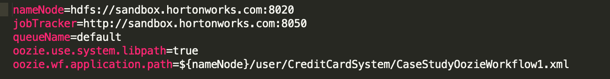
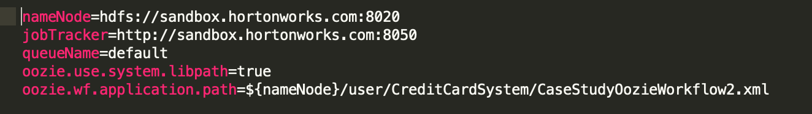

Oozie is a workflow scheduler system that manages Apache Hadoop jobs. It is an open source framework. Oozie supports jobs in Map Reduce, Hive and HDFS. Oozie Coordinator jobs are recurrent Oozie Workflow jobs triggered by time (frequency) and data availability.
The main purpose of using Oozie is to manage different type of jobs being processed in Hadoop system. Dependencies between jobs are specified by a user in the form of Directed Acyclic Graphs. Oozie consumes this information and takes care of their execution in the correct order as specified in a workflow.
It consists of two parts:
1. Workflow engine: Responsibility of a workflow engine is to store and run workflows composed of Hadoop jobs e.g., MapReduce, Hive.
2. Coordinator engine: It runs workflow jobs based on predefined schedules and availability of data. Oozie is scalable and can manage the timely execution of thousands of workflows (each consisting of dozens of jobs) in a Hadoop cluster.
Our Credit Card System consists of 2 processes.
1. Process Automation
2. Process Optimization
In this process we
1. Created an Oozie Workflow that will automate the processes of Data Extraction and Transportation with Sqoop and Data Loading with Hive.
NOTE: Each file in Data Extraction and Transportation with Sqoop is deleted before the workflow is executed in order to prevent storage of redundant data. The tables created in Data Loading with Hive should be dropped before executing the hive workflow in order to prevent redundancy.
Following is a breakdown of Sqoop Import in Oozie.
NOTE: Each Node starts off with an < Action Name > and ends with an < Ok To >. This is in an indication of completion. If that node is not properly executed or runs an error, the error message of "fail_job" will be thrown instead of proceeding to the next node.

In this process we
1. Drop all tables from Process Automation, and delete their directories to prevent redundant storage of data and conflicting structure. Recreate all tables so that they have no partitions.
2. Create a new Oozie workflow similar to the process of Process Automation. This time, however, Sqoop and Hive should only import new data.Original data should not be deleted in this sqoop/hive process.
3. Modify the Oozie Coordinator to use this workflow rather than the original, unoptimized, workflow.
Following is a breakdown of Sqoop Update in Oozie.
NOTE: Each Node starts off with an < Action Name > and ends with an < Ok To >. This is in an indication of completion. If that node is not properly executed or runs an error, the error message of "fail_job" will be thrown instead of proceeding to the next node.
